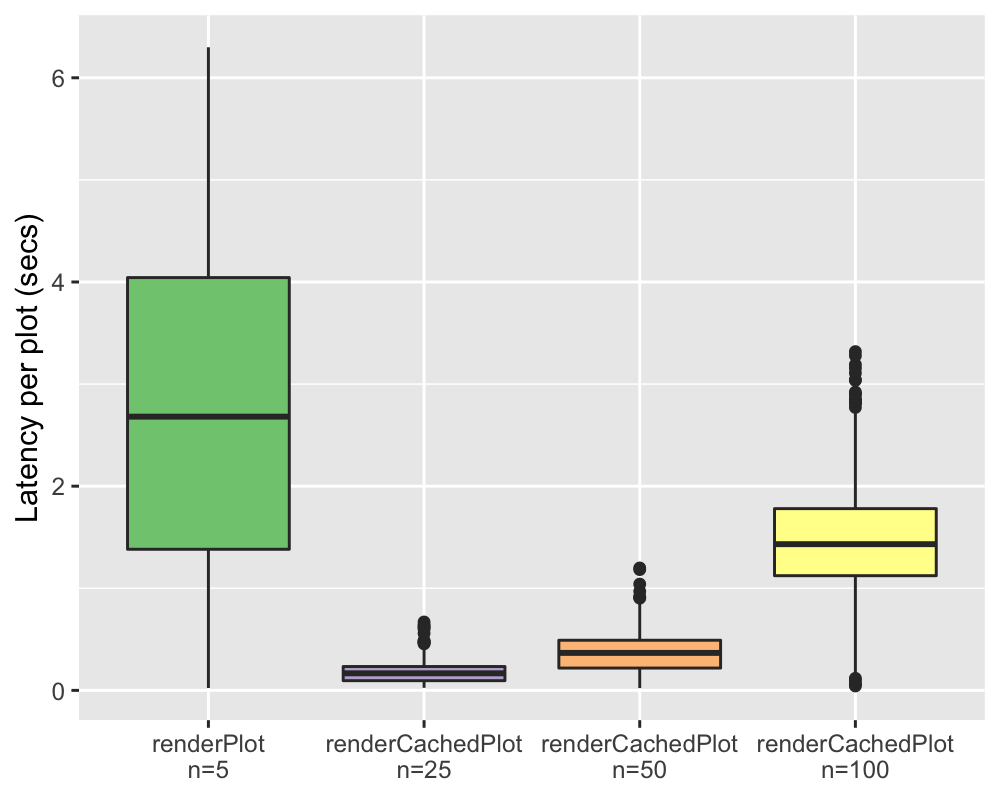

2018-11-13
We’re pleased to announce the CRAN release of Shiny v1.2.0! This release features Plot Caching, an important new tool for improving performance and scalability in Shiny apps.
If you’re not familiar with the term “caching”, it just means that when we perform a time-consuming operation, we save (cache) the results so that the next time that operation is requested, we can skip the actual operation and instantly fetch the previously cached results. Shiny’s reactive expressions do some amount of caching for you already, and you can use more explicit techniques to cache the various operations you might do to your data (using the memoise package, or manually saving intermediate data frames to disk as CSV or RDS, for two examples).
Plots, being very common and (potentially) expensive-to-compute outputs, are great candidates for caching, and in theory you can use renderImage to accomplish this. But because Shiny’s renderPlot function contains a lot of complex infrastructure code, it’s actually quite a difficult task. Despite some valiant attempts, all of the examples we’ve seen in the wild have had serious limitations we wanted to overcome.
Shiny v1.2.0 introduces a new function, renderCachedPlot, that makes it much easier to add plot caching to your app.
renderCachedPlotLet’s take a simple, but expensive, plot output:
output$plot <- renderPlot({
ggplot(diamonds, aes(carat, price, color = !!input$color_by)) +
geom_point()
})The diamonds dataset has 53,940 rows. On my laptop, this takes about 1580 milliseconds (1.58 seconds). Perhaps that’s fast enough for doing exploratory data analysis, but it’s slower than we’d like for a high traffic Shiny app.
We can tell Shiny to cache this plot in two steps.
renderPlot to renderCachedPlot.cacheKeyExpr. This is an expression that Shiny will use to determine which invocations of renderCachedPlot should be considered equivalent to each other. (In this case, two plots with different input$color_by values can’t be considered the “same” plot, so the cacheKeyExpr needs to have input$color_by.)output$plot <- renderCachedPlot({
ggplot(diamonds, aes(carat, price, color = !!input$color_by)) +
geom_point()
}, cacheKeyExpr = { input$color_by })With these code changes, the first time a plot with a particular input$color_by is requested, it will take the normal amount of time. But the next time it is requested, it will be almost instant, as the previously rendered plot will be reused.
To quantify the performance difference between the cached and uncached versions, I turned each into a minimal Shiny app (source). This app simply provides the color_by input using the new varSelectInput control, and then renders the output using either of the two code examples above. Then I used our (still-in-development) Shiny load testing tools to record a test script, and “replay” it against both versions of the app, each running in a single R process.
I tested the renderPlot version of the app with 5 concurrent users, and the renderCachedPlot version with 25, 50, and 100 concurrent users. The difference in performance is as dramatic as we’d expect:

With only five concurrent users, the latency is already pretty bad with the renderPlot version. (Note that this isn’t intended to represent typical performance with Shiny apps in general! We chose a particularly torturous ggplot on purpose.)
On the other hand, the renderCachedPlot version doesn’t break a sweat with 50 concurrent users; and even at 100 concurrent users, the latency is still acceptable.
A Shiny app is a good candidate for plot caching if:
Since our test has a pretty expensive plot as its only output, and our load testing tools simulate n users all doing the same exact thing, this these numbers reflect a best-case scenario for plot caching.
Shiny can store your cached plots in memory, on disk, or with another backend like Redis. You also have a number of options for limiting the size of the cache. Be sure to read this article to get the most out of this feature!
In future releases of Shiny, we hope to build on this foundation we’ve laid to dramatically speed up other areas of Shiny apps, like reactive expressions and non-plot outputs. In the meantime, we hope you find plot caching to be a useful addition to your performance toolkit!
Upgrade FontAwesome from 4.7.0 to 5.3.1 and made icon tags browsable, which means they will display in a web browser or RStudio viewer by default (#2186). Note that if your application or library depends on FontAwesome directly using custom CSS, you may need to make some or all of the changes recommended in Upgrade from Version 4. Font Awesome icons can also now be used in static R Markdown documents.
Address #174: Added datesdisabled and daysofweekdisabled as new parameters to dateInput(). This resolves #174 and exposes the underlying arguments of Bootstrap Datepicker. datesdisabled expects a character vector with values in yyyy/mm/dd format and daysofweekdisabled expects an integer vector with day interger ids (Sunday=0, Saturday=6). The default value for both is NULL, which leaves all days selectable. Thanks, @nathancday! #2147
See the full changelog for Shiny v1.2.0 for other minor improvements and bug fixes we’ve made in this release.